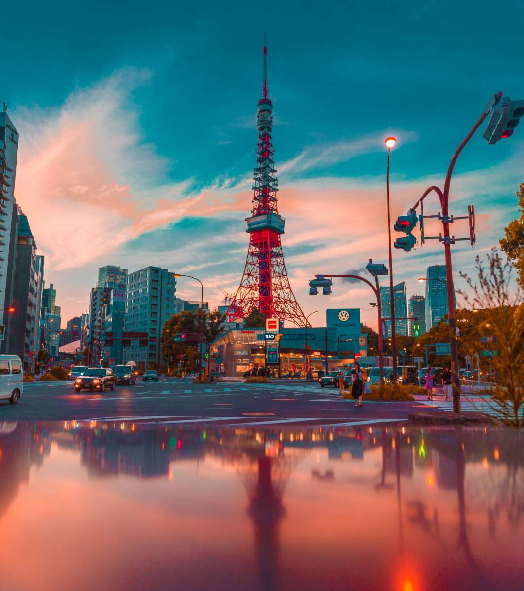
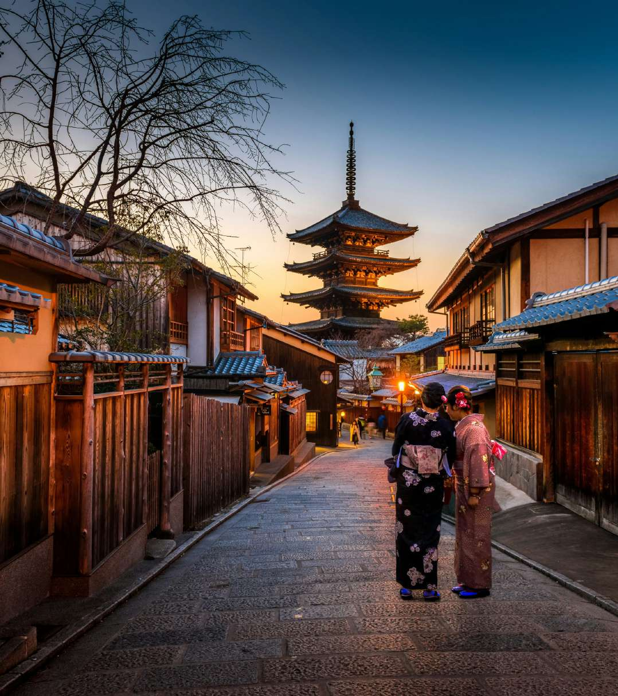
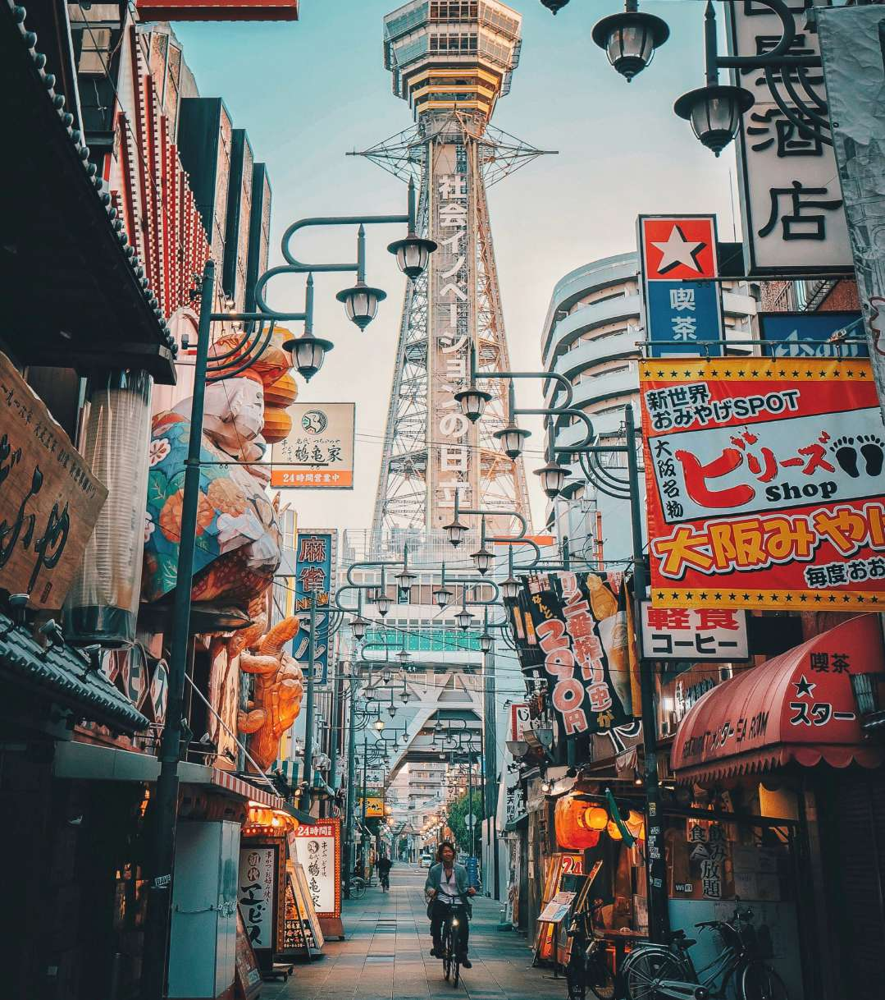
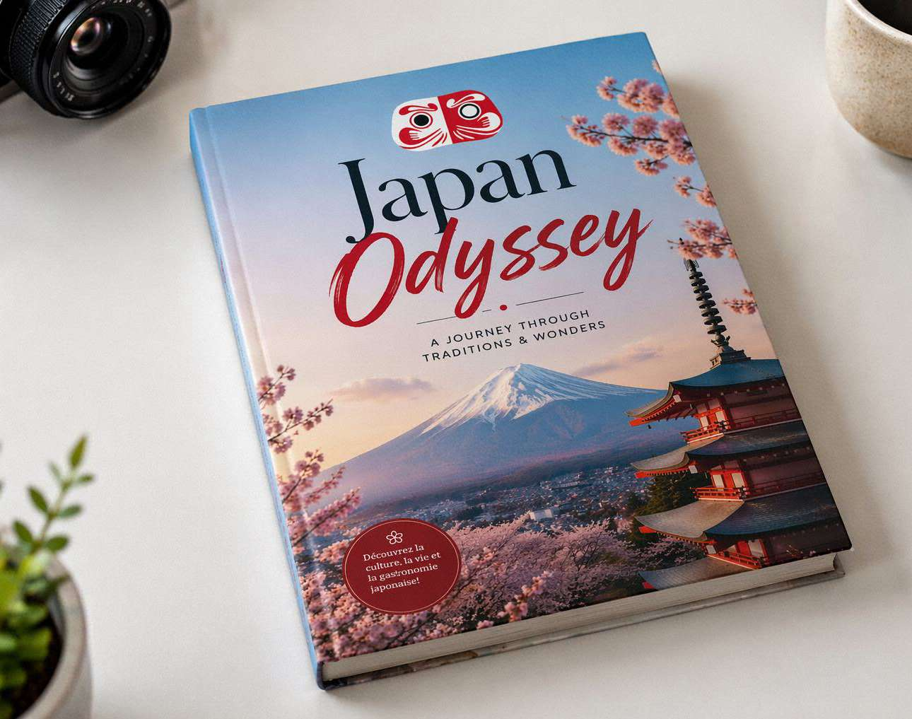

Découvrez le Japon autrement avec Japan Odyssey —
des séjours authentiques conçus par un passionné.
Explorer
Trois villes, mille expériences — chacune unique, chacune inoubliable.



Des circuits soigneusement pensés pour vivre le Japon en profondeur.
Découvrir →Ramen, sushi, izakaya — une odyssée culinaire exceptionnelle.
Découvrir →Cérémonie du thé, kendo, onsen — des expériences authentiques.
Découvrir →Votre voyage, vos règles. On crée l'itinéraire parfait pour vous.
Découvrir →Né d'un coup de cœur pour le Japon, Japan Odyssey accompagne les voyageurs passionnés à la découverte d'un pays extraordinaire. Chaque séjour est conçu avec authenticité et une vraie connaissance du terrain.
Découvrez nousTémoignages
Des voyageurs, de vraies expériences, des souvenirs impérissables.
Un voyage inoubliable ! Alban a tout organisé parfaitement, nous avons découvert des endroits magiques loin des sentiers battus. Le niveau de détail dans les recommandations était bluffant.
Japan Odyssey a transformé notre lune de miel en véritable conte de fées. Chaque hôtel, chaque restaurant, chaque expérience était parfaitement adapté à nos envies. Merci infiniment !
Mon premier voyage solo au Japon et je n'étais jamais seul grâce aux conseils d'Alban. Chaque jour avait sa surprise. Je repars l'année prochaine, c'est certain !
Avant votre départ, armez-vous des meilleures informations. Notre guide complet révèle les secrets du Japon — adresses locales, codes culturels, astuces pratiques, meilleures périodes et bien plus encore.
